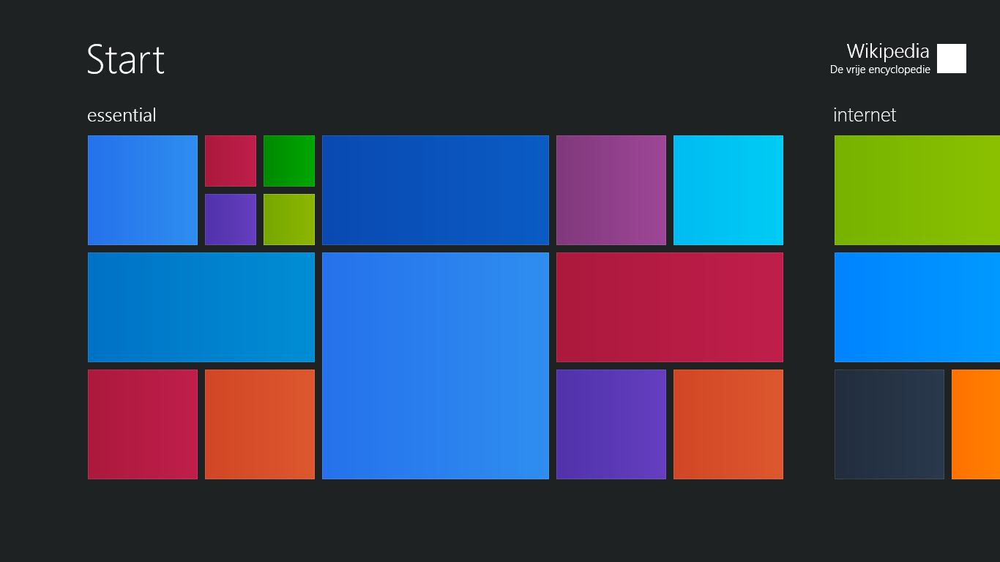

References / Operating system / 388
Windows 8.1 Start screen (geometric version)
The tile grid of the Windows 8.1 Start screen, with names, icons, and pictures removed so that only the colored rectangles remain.
- Source
- Wikimedia Commons: File:Start81.png
- Creator
- Microsoft
- Made
- 2013 (Windows 8.1)
- Style
- Flat design (agent-proposed, not yet reviewed by a person)
- Moods
- Bright, orderly, digital
- Evidence
- Inspected File:Start81.png (1366 × 768, dated 2013-12-12) and stored it. Commons describes it as the Start screen “without text, backgrounds, and other non-geometric material”, so it is an edited image, not a raw screenshot.
- Reviewed
- Rights
- Open license, stored. License: public domain. Rights policy

Context
Wikipedia names Windows 8 as one of the products that adopted Metro after Windows Phone 7, and says that flat colored “live tiles” came from early Windows Phone studies (Wikipedia: Metro (design language))).
NN/g names Metro and Windows 8 as the main influence that made flat design popular (NN/g 2015).
Observed
- The ground is a flat charcoal gray. The title “Start” is set in large, thin white type at top left.
- Group labels “essential” and “internet” are lowercase, light, white, and smaller.
- Tiles come in four sizes: small squares, medium squares, wide rectangles, and one large square. All have square corners and are separated by narrow even gaps.
- Tile colors include blue, royal blue, cyan, crimson, green, lime, purple, violet, orange-red, orange, and a dark slate.
- Each tile brightens slightly from left to right and has a faint lighter edge. The effect is subtle next to the color change between tiles.
- A user tile at top right shows the name “Wikipedia” and a plain white square.
Why it belongs
Measured with tools/image-traits.py; see the measurement file. The image strips the Start screen to its structure: size, color, and gap.
The faint gradient on each tile belongs to Windows 8.1. The strict no-gradient rule of this record is stricter than Metro was in practice.
Borrow
Lay out navigation as tiles in two or three sizes on one grid, with one even gap, and give each destination its own saturated color.
Label groups with small lowercase words instead of boxes or rules.
Measured
Machine-extracted by tools/image-traits.py on . Full measurement.
- Mean chroma
- 0.34
- Palette
- #1f2223 48%
- #2878ed 8%
- #b01a41 7%
- #723ca1 5%
- #007fcc 4%
- #0a53bb 4%
- #d64f2a 4%
- #81b900 3%

